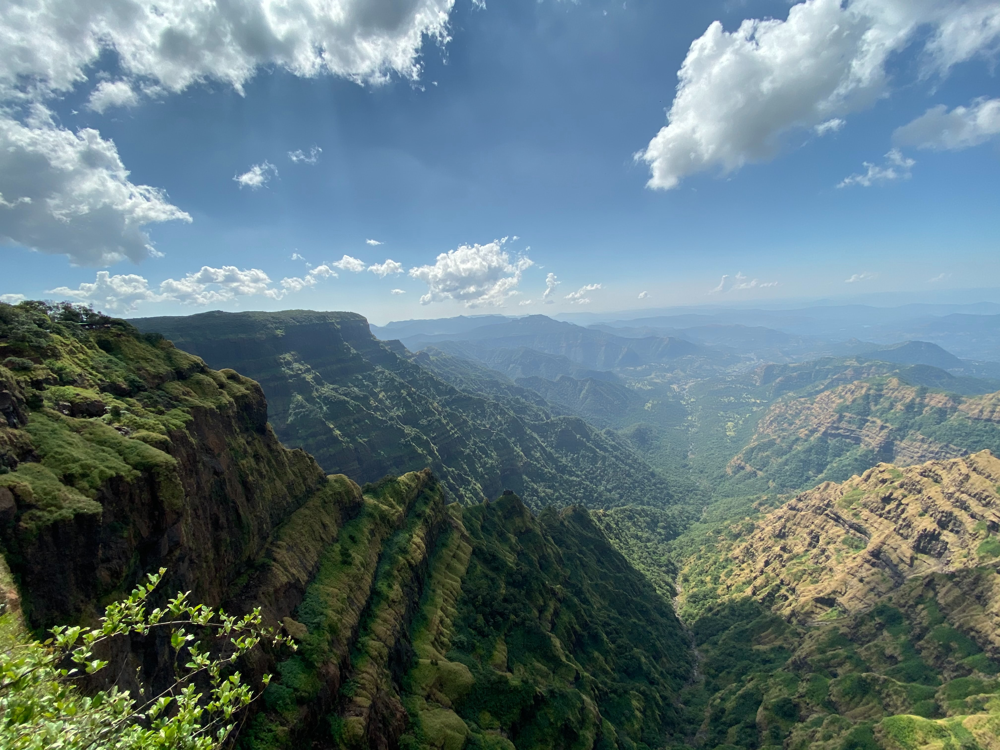
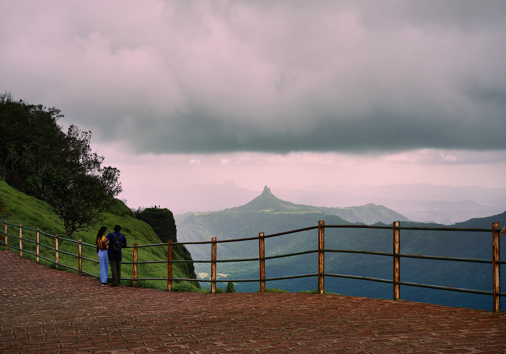
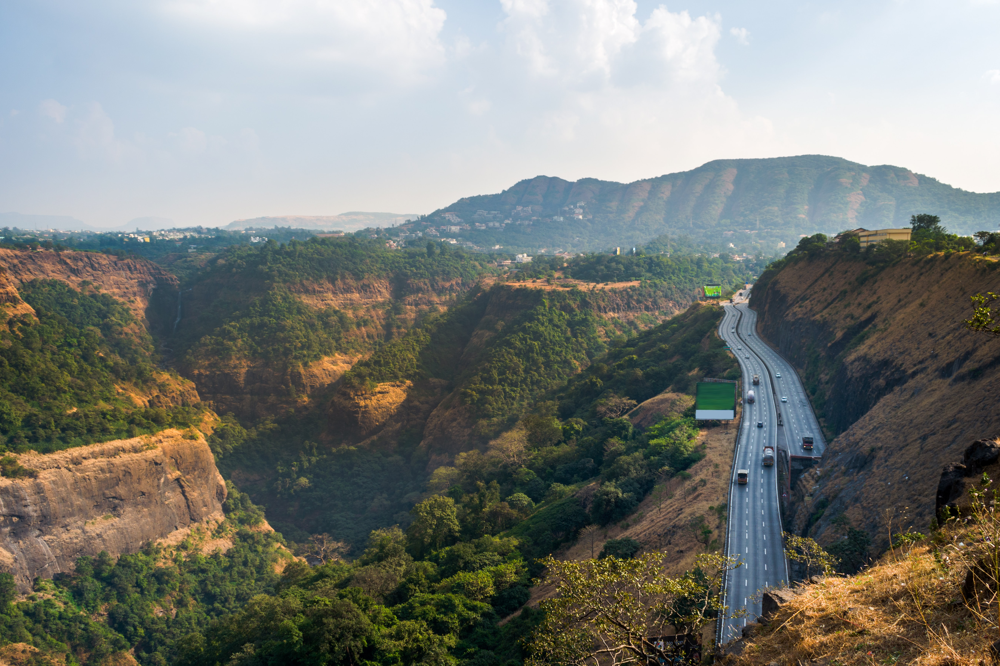

HILLS STATION

Nestled in the picturesque Western Ghats, tourist places in Mahabaleshwar will captivate your imagination with their natural splendor. Mahabaleshwar is well known for its numerous rivers, magnificent cascades, and majestic peaks. The city comprises of ancient temples, boarding schools, manicured and lush green dense forest, waterfalls, hills, valleys that will take your breath away on your visit. Amid your visit to Mahabaleshwar witness the alluring dawns and dusks from the slope, in the midst of the rich green vista. Located about 120 kilometers southwest of Pune and 285 kilometers from Mumbai, Mahabaleshwar is a vast plateau measuring 150 kilometers, bound by valleys on all sides.

Matheran, Mumbai
the Matheran hill station is the best place to enjoy the sunset and sunrise view along with some mind blowing sceneries to keep you fresh and up front. This extraordinary hill station offers the best tourist places in Matheran which are untouched and undisturbed by the rustling city life that surrounds the town. The place is actually located on the Western Ghats that ranges in an elevation of around 800 meter above the sea level. The place always has a pleasant weather to enjoy during any time of the year, but its beauty gets added up during the season of rain and thunderstorm.The best thing about this place is that it is like a quiet and relaxing place with no buzzing of horns and pollution and along with that it contains some mesmerizing places and views of the extraordinary nature.

Khandala, Western Ghat
Khandala City is a hill station that is located on the Western Ghats Mountain Range of Maharashtra. It is about 3 km from Lonavala, 12 km from Khopoli and about 33.4 km from Karjat region. Located at the top of Bhor Ghat, this place serves as the main link between the major cities of Maharashtra - Mumbai and Pune. Khandala is a beautiful place and has got a good share of nature’s alluring beauty. As it is surrounded by lush green forest covers, misty valleys, and cascading waterfalls, this place serves as a great weekend getaway as well as adventure hotspot for travellers from various parts of the country. Khandala is mainly famous for hiking tours to sight panoramic views of the Sahyadri mountain ranges in Western Ghats.